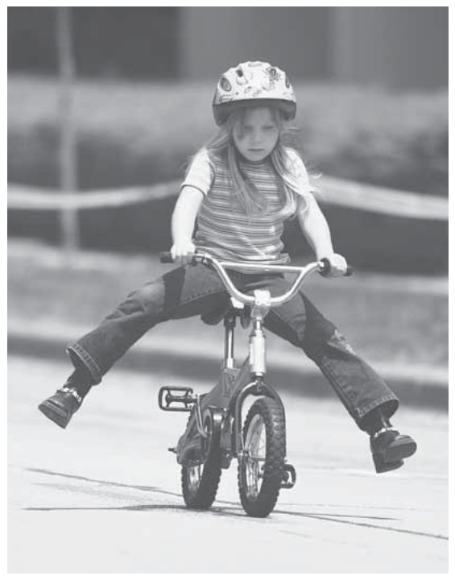
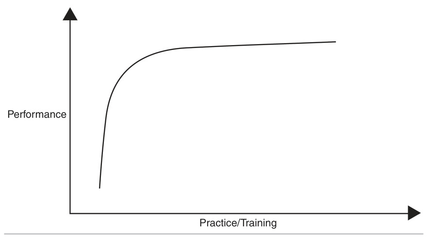
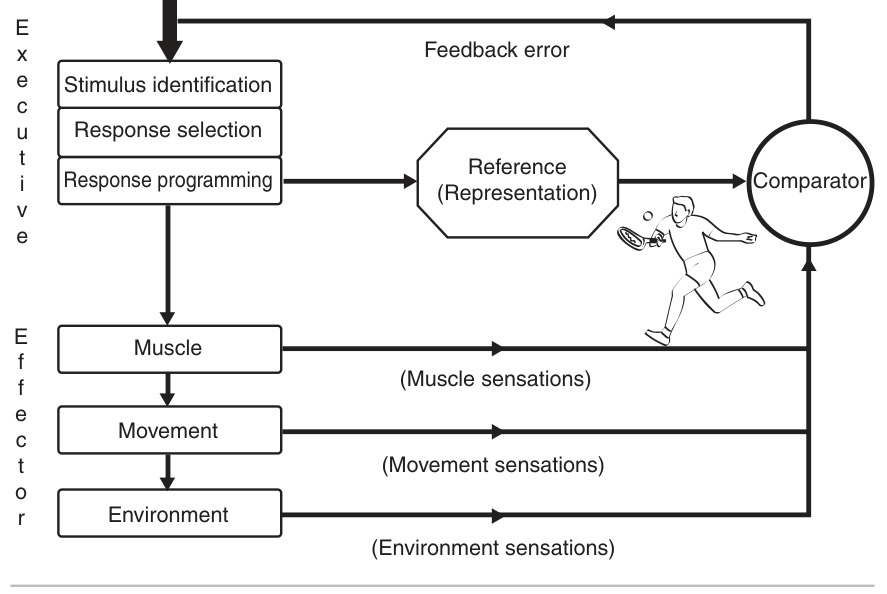
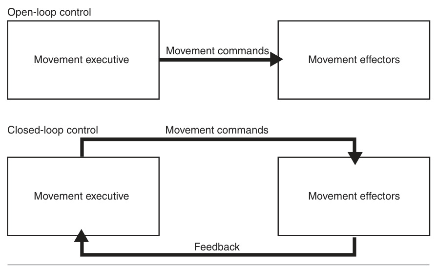
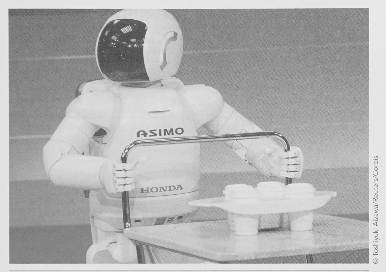
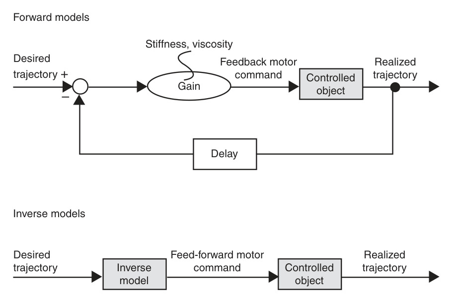
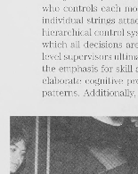
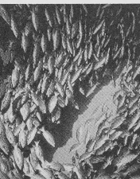
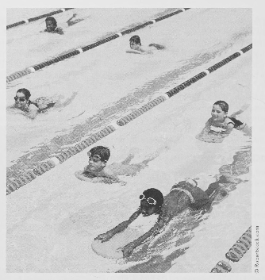

Chương 1 — Các lý thuyết truyền thống về tiếp thu kỹ năng
Các Lý thuyết Truyền thống
về Tiếp thu Kỹ năng
CHƯƠNG 1
ĐỀ CƯƠNG CHƯƠNG
Tiếp thu Kỹ năng: Định nghĩa và Các lý thuyết
Các lý thuyết liên tưởng Các lý thuyết thần kinh-trưởng thành Lý thuyết giai đoạn học vận động của Fitts Các lý thuyết xử lý thông tin Các lý thuyết tính toán thần kinh
Đặc điểm Chung của Các Lý thuyết Truyền thống
Biểu diễn Thế giới và Các vận động Người học như Hệ thống kiểm soát phân cấp Lưu trữ bị giới hạn năng lực Nhận thức gián tiếp Giảm thiểu sai số và nhiễu Các mô hình Phạm vi vận động hạn chế
Hệ quả đối với Người thực hành Vận động
Lượng luyện tập Tính biến thiên trong luyện tập Tổ chức luyện tập Luyện tập theo từng phần nhiệm vụ Hướng dẫn và Phản hồi Trình diễn mẫu kỹ thuật
Tóm tắt
Trong thế kỷ qua, câu hỏi về cách con người học kiểm soát và phối hợp các vận động của mình đã nhận được nhiều sự chú ý, với việc các nhà khoa học đề xuất nhiều lý thuyết khác nhau. Dù vẫn còn nhiều tranh luận đáng kể về lý thuyết nào là phù hợp nhất (Summers, 2004), tầm quan trọng của việc xây dựng một khung lý thuyết vững chắc để nghiên cứu tiếp thu kỹ năng và hướng dẫn hoạt động thực tiễn vẫn rõ ràng. Nhiều người thực hành dùng các mô hình về hành vi con người, một cách tiềm ẩn hoặc tường minh, để lên kế hoạch ra quyết định cho hoạt động thực tiễn tập trung và hiệu quả. Các lý thuyết về tiếp thu kỹ năng có thể giúp người thực hành xây dựng một mô hình phù hợp về quá trình học vận động, cần thiết để hiểu cách người học tiếp thu các kỹ năng vận động. Hiện bạn nhìn nhận hành vi vận động như thế nào và sự hiểu biết của bạn làm nền tảng cho cách bạn giảng dạy hoặc huấn luyện ra sao? Như phần II của cuốn sách này sẽ cho thấy, tri thức này cung cấp một triết lý để cấu trúc hóa các bối cảnh luyện tập, cung cấp thông tin cho người học, sử dụng các trình diễn mẫu trực quan và nhiều nhiệm vụ quan trọng khác.
Chương này cung cấp cái nhìn lịch sử ngắn gọn về các lý thuyết truyền thống của việc tiếp thu kỹ năng vận động. Cái nhìn tổng quan này sẽ giúp chúng tôi tổng hợp một số hệ quả dành cho những người thực hành vận động. Việc tóm tắt các đặc điểm chung của các lý thuyết truyền thống sẽ giúp chúng ta so sánh chúng với các lý thuyết thay thế được mô tả trong các chương sau. Khi đọc chương này, chúng tôi khuyến khích bạn giữ một tâm thế cởi mở nhưng phản biện đối với những điểm mạnh và yếu của các lý thuyết được thảo luận. (Để có cái nhìn tổng quan chi tiết hơn về các lý thuyết này, hãy tham khảo Schmidt và Wrisberg [2004], Magill [2006], và Haywood và Getchell [2005]). Hãy bắt đầu bằng việc xem xét ý nghĩa của thuật ngữ tiếp thu kỹ năng.
Tiếp thu Kỹ năng: Định nghĩa và Các lý thuyết
Tiếp thu kỹ năng vận động theo truyền thống được mô tả là các quá trình nội tại mang lại những thay đổi tương đối bền vững trong năng lực vận động của người học (Schmidt & Wrisberg, 2004). Ví dụ, các kỹ năng vận động như đi xe đạp, bắt bóng hoặc lái xe hơi đòi hỏi nhiều luyện tập để chúng ta thực hiện hiệu quả. Tiếp thu kỹ năng đòi hỏi chúng ta tương tác hiệu quả với môi trường, phát hiện thông tin quan trọng và căn chỉnh thời gian phản ứng phù hợp. Quá trình này nên tạo ra các mẫu hình phối hợp có thể thích ứng với một loạt đặc điểm thực hiện khác nhau. Hành vi thích ứng rất quan trọng vì các điều kiện như môi trường, yêu cầu nhiệm vụ và động lực của chúng ta có thể thay đổi mỗi khi chúng ta thực hiện một kỹ năng vận động (Davids, Bennett, & Newell, 2006).
Quá trình tiếp thu kỹ năng khác với việc thực hiện kỹ năng (kiểm soát vận động) ở chỗ học là một quá trình tiến triển diễn ra qua nhiều lần thực hiện, tạo ra hành vi ít bị tổn thương trước các yếu tố thoáng qua như mệt mỏi, hiệu ứng khán giả và lo âu. Một cách mà các nhà nghiên cứu đã cố gắng hiểu tiếp thu kỹ năng là xem xét sự thay đổi của thực hiện theo thời gian. Ví dụ, trong các nỗ lực nghiên cứu ban đầu, Bryan và Harter (1897) đã nghiên cứu cách kỹ năng gõ phím của người học phát triển trong khi luyện tập gửi và dịch mã Morse. Trong suốt 40 tuần, các nhân viên điện báo đã trải qua các giai đoạn cải tiến rõ rệt và những giai đoạn mà mức thực hiện đi ngang. Suy luận từ những đường cong thực hiện này là người học ban đầu kiến tạo các yếu tố đơn giản của kỹ năng, xen kẽ với các giai đoạn củng cố (tức là phát triển tính tự động hóa), trước khi liên kết các bộ phận riêng lẻ của vận động (trong trường hợp này là các lần nhấn phím riêng lẻ) thành các mẫu hình hành vi được tích hợp hơn (các chuỗi nhấn phím liên kết được gõ thành từ).
Snoddy (1926) đề xuất rằng việc học có thể được mô tả theo cách có thể dự báo bằng một phương trình toán học (logC = logB + nlogx, trong đó C là thước đo của thực hiện, x là lượng luyện tập, còn B và n là các hằng số). Luật lũy thừa của luyện tập này dự đoán một quan hệ đường thẳng giữa các hàm logarit của thời gian luyện tập và thực hiện (xem hình 1.1). Luật lũy thừa của luyện tập đơn giản khẳng định thực hiện cải thiện theo luyện tập, dù cuối cùng vẫn có những giới hạn vật lý cho quan hệ này.
Luyện tập một kỹ năng như đi xe đạp dẫn đến cải thiện thực hiện. Tiếp thu kỹ năng giúp chúng ta tương tác hiệu quả với môi trường, phát hiện thông tin quan trọng và căn chỉnh thời gian phản ứng phù hợp.
Hình 1.1: Luật lũy thừa của luyện tập dự đoán một quan hệ đường thẳng giữa các hàm logarit của thời gian luyện tập và thực hiện.
Luyện tập/Huấn luyện
Thực hiện


Dù đã được nghiên cứu trong nhiều năm, luật lũy thừa của luyện tập vẫn chưa được chấp nhận rộng rãi, vì ngày càng rõ rằng việc học thường được đặc trưng bởi những bước nhảy đột ngột, cải thiện nhanh, thậm chí là suy giảm thực hiện theo thời gian. Ví dụ, dù nghiên cứu kinh điển của Crossman (1959) về những người làm xì gà dường như ủng hộ luật lũy thừa của Snoddy, các nhà nghiên cứu vẫn tiếp tục đặt câu hỏi về tính phổ quát của dự đoán này, vì nhiều loại đường cong học tập đã được quan sát trong các thí nghiệm học vận động cũng như trong luyện tập (xem Newell, Liu, & Mayer-Kress, 2001).
Ban đầu, các nhà nghiên cứu ưa chuộng một định nghĩa rộng hơn nhiều về tiếp thu kỹ năng, bao gồm cả các hoạt động vận động nhấn mạnh mạnh vào nhận thức, chẳng hạn như chơi cờ vua hoặc học ngôn ngữ mới (ví dụ, Bryan & Harter, 1897; Chase & Simon, 1973; Ebbinghaus, 1964). Thực tế, các nghiên cứu xem xét những kỹ năng này đã đóng góp đáng kể vào hiểu biết của chúng ta về các quá trình như chuyên môn, chú ý và tính tự động hóa của kiểm soát vận động. Gần đây hơn, có xu hướng xem xét việc tiếp thu phối hợp và kiểm soát vận động với sự nhấn mạnh lý thuyết ngang nhau về nhận thức, tri giác và hành động. Trước khi thảo luận xu hướng gần đây này ở các chương sau, chúng ta sẽ mô tả ngắn gọn năm tiếp cận lý thuyết truyền thống đối với tiếp thu kỹ năng: các lý thuyết liên tưởng, các lý thuyết thần kinh-trưởng thành, lý thuyết giai đoạn học vận động của Fitts, các lý thuyết xử lý thông tin và các lý thuyết tính toán thần kinh.
Các Lý thuyết Liên tưởng
Những người đóng góp sớm cho việc nghiên cứu tiếp thu kỹ năng quan tâm đến mối quan hệ giữa kích thích vận động (thông tin) và hành động (ví dụ, Skinner, 1938; Thorndike, 1927; Woodworth, 1899). Khi xem xét mối liên hệ này, các nhà nghiên cứu dùng hoặc là các vận động lặp lại tương đối đơn giản, hoặc là các phản xạ để kiểm tra giả định của mình. Ví dụ, để xem xét vai trò của trí nhớ và phản hồi trong quá trình học, Woodworth (1899) yêu cầu những người tham gia bị bịt mắt vẽ các đường có độ dài khác nhau. Nghiên cứu này chứng minh rằng việc lặp lại vận động mà không có phản hồi thì không cải thiện độ chính xác trong luyện tập. Tuy nhiên, khi các nhà nghiên cứu đưa ra những nhận xét đơn giản đúng hay sai sau mỗi lần thử, độ chính xác của người tham gia cải thiện rõ rệt. Những phát hiện này cho thấy vai trò quan trọng của phản hồi trong việc củng cố học tập.
Những nhà nghiên cứu sớm khác về tiếp thu kỹ năng tin rằng phản xạ là các khối xây dựng cơ bản của vận động và rằng con người là những người nhận thụ động các đầu vào giác quan bên ngoài đã thúc đẩy hành vi của họ. Ví dụ, để nghiên cứu vận động tách biệt với các đầu vào từ vùng vỏ não cao cấp, Sherrington (1906) đã tiến hành thí nghiệm trên những con vật có tủy sống bị cắt đứt bằng phẫu thuật nhằm nghiên cứu mạch của hệ thần kinh trung ương (CNS). Các nhà tâm lý học thực nghiệm nổi bật như Skinner (1938) và Thorndike (1927) cũng có ảnh hưởng trong giai đoạn này. Tuy nhiên, nhiều nhà nghiên cứu đã chỉ trích những phương pháp này vì giả định rằng các mô hình động vật có liên quan đến việc nghiên cứu tiếp thu kỹ năng vận động ở con người. Hơn nữa, các nghiên cứu có xu hướng tập trung quá nhiều vào kết quả thực hiện có thể quan sát được thay vì hiểu các quá trình tiềm ẩn của tiếp thu kỹ năng. Thêm vào đó, các lý thuyết liên tưởng thường thiếu lời giải thích để lý giải thực tế là con người có thể chọn thời điểm và cách thức điều chỉnh hành động của mình, và chúng đã không giải thích được rằng phản hồi giác quan không phải lúc nào cũng cần thiết để thực hiện một số vận động, như trong trường hợp các hành động phản ứng nhanh.
Các Lý thuyết Thần kinh-Trưởng thành
Trong giai đoạn từ những năm 1920 đến 1940, nghiên cứu về phát triển vận động đã lấn át việc nghiên cứu tiếp thu kỹ năng. Ở một mức độ nào đó, không có sự phân biệt rõ ràng giữa các ngành phát triển vận động và học vận động, vì cả hai quá trình đều tạo ra những thay đổi bền vững trong hành vi vận động, dù theo các thang thời gian khác nhau. Trong phát triển vận động, những thay đổi hành vi thường được quy cho sự tăng trưởng và trưởng thành, còn trong học vận động, luyện tập hoặc kinh nghiệm là yếu tố quyết định (Haywood & Getchell, 2005). Nghiên cứu sớm về phát triển vận động có xu hướng giải thích sự thay đổi hành vi từ góc nhìn thần kinh-trưởng thành, tập trung đặc biệt vào giai đoạn từ lúc mới sinh đến tuổi vị thành niên (Gesell, 1928; McGraw, 1943). Thuyết này cho rằng các khuynh hướng di truyền mà chúng ta thừa kế trong DNA quyết định trình tự có trật tự trong phát triển vận động của mỗi người (ontogeny). Nhiều nhà nghiên cứu coi sự tiến triển ổn định của cá nhân qua các cột mốc vận động then chốt là bằng chứng thuyết phục cho ảnh hưởng áp đảo của tiến hóa và di truyền so với môi trường (xem hình 1.2). Các nhà lý thuyết cho rằng sự trưởng thành của CNS là chất xúc tác cho sự phát triển của các kỹ năng vận động mới và sự biến mất dần của các vận động cũ, kém chức năng hơn
Hình 1.2: Các cột mốc phát triển vận động, từ lúc mới sinh đến 15 tháng tuổi.
In lại từ M.M. Shirley, 1963, The motor sequence. Trong Readings in child psychology, ấn bản thứ 2, do W. Dennis biên tập (Englewood Cliffs, NJ: Prentice-Hall, Inc.), 77; được điều chỉnh, với sự cho phép, từ M.M. Shirley, 1931, The first two years: A study of twenty-five babies, Tập I., Institute of Child Welfare Monograph No. 7 (Minneapolis, MN: University of Minnesota Press), 100. Bản quyền © 1931 của Đại học Minnesota, gia hạn 1959.
Tư thế thai nhi
(0 tháng)
Ngẩng cằm (1 tháng)
Nâng ngực (2 tháng)
Với lấy nhưng trượt
(3 tháng)
Ngồi có hỗ trợ
(4 tháng)
Ngồi trên đùi, nắm vật
(5 tháng)
Kéo mình đứng dậy
nhờ đồ nội thất (12 tháng)
Trèo bậc thang
(13 tháng)
Đứng một mình (14 tháng)
Đi một mình (15 tháng)
Đi khi được dắt
(11 tháng)
Bò (10 tháng)
Đứng mà bám
vào đồ nội thất (9 tháng)
Đứng có giúp đỡ
(8 tháng)
Ngồi một mình (7 tháng)
Ngồi trên ghế cao, nắm vật treo lơ lửng
(6 tháng)

do các phản xạ sớm hoặc lảm nhảm vận động gây ra (được các nhà nghiên cứu thời kỳ đầu coi là những chuyển động chi ngẫu nhiên và rời rạc ở trẻ sơ sinh).
Tuy nhiên, do thiếu các thước đo trực tiếp về những quá trình trưởng thành này trong CNS, nghiên cứu trong lĩnh vực đã bước vào một giai đoạn phân tích mô tả và xác định các chuẩn mực theo nhóm tuổi từ giữa những năm 1940 đến những năm 1970. Các nhà nghiên cứu sau đó tập trung nhiều hơn vào những mâu thuẫn thú vị với tiến trình các cột mốc vận động (ví dụ, Thelen, Ridley-Johnson, & Fisher, 1983), làm nổi bật ảnh hưởng của môi trường riêng biệt của mỗi người trong quá trình phát triển. Các nhà nghiên cứu không còn coi những khác biệt cá nhân về tốc độ tiến triển qua các cột mốc vận động là bằng chứng tiềm ẩn của bệnh lý. Thay vào đó, họ tin rằng những khác biệt này phản ánh sự tương tác độc đáo giữa các đặc điểm cá nhân và bối cảnh môi trường cụ thể mà mỗi người phát triển (Thelen & Smith, 1994).
Lý thuyết giai đoạn học vận động của Fitts
Chiến tranh thế giới thứ hai đã khơi dậy lại sự quan tâm đến các quá trình tiếp thu kỹ năng khi các chính phủ ở Hoa Kỳ và Vương quốc Anh yêu cầu các nhà nghiên cứu nghiên cứu phương pháp chọn lọc và huấn luyện nhân viên quân sự. Vì những mối bận tâm thực tiễn, chẳng hạn như thiết kế công thái học của thiết bị và huấn luyện các kỹ năng quân sự, các nhà nghiên cứu đã áp dụng một cách tiếp cận hướng vào nhiệm vụ bao trùm, ít giúp làm sáng tỏ các quá trình tiếp thu kỹ năng ở con người (Schmidt & Lee, 2005). Việc nhấn mạnh nghiên cứu thực hiện và học tập trong các nhiệm vụ cụ thể đã dẫn đến kiến thức về những vấn đề thực tiễn như lập lịch tối ưu cho luyện tập và cung cấp phản hồi nhằm tăng cường học tập (ví dụ, số lượng, tần suất, thời lượng). Paul Fitts (1964) đã phát triển một mô hình có ảnh hưởng về tiếp thu kỹ năng, nhận được nhiều ủng hộ trong các sách giáo khoa và tài liệu thực hành sau này (ví dụ, Abernethy, 2001). Mô hình ba giai đoạn của ông mô tả việc học như một quá trình liên tục với những thay đổi dần dần trong bản chất của xử lý thông tin khi việc học tiến triển (xem hình 1.3).
Trong giai đoạn nhận thức ban đầu của mô hình Fitts, người học được tiếp xúc với các quy tắc đơn giản và hướng dẫn bằng lời để có được hiểu biết cơ bản về chuyển động. Ở giai đoạn này, thực hiện mang tính biến thiên và đầy lỗi khi người học thử nghiệm các cấu hình vận động khác nhau. Khi người học đạt đến giai đoạn liên tưởng tiếp theo, các mẫu hình vận động được tinh chỉnh và nhất quán hơn. Tùy thuộc vào độ phức tạp của nhiệm vụ và năng lực của người học, giai đoạn này có thể đòi hỏi thời lượng luyện tập khác nhau. Đạt đến giai đoạn tự động hóa thứ ba đòi hỏi luyện tập kéo dài. Ở giai đoạn này, người học có thể thực hiện kỹ năng với nỗ lực tinh thần tối thiểu và rất ít lỗi. Như đã lưu ý trong chương sau, phần lớn quá trình học được suy ra trong mô hình ba giai đoạn của Fitts được quy cho sự phát triển và thu thập các năng lực xử lý thông tin (Anderson, 1982) và việc xây dựng các chương trình vận động phù hợp.
Các lý thuyết xử lý thông tin
Bắt đầu từ các tác phẩm sớm của James (1890), Woodworth (1899) và Lashley (1917), một lý thuyết phổ biến đã giả định rằng thông tin nhận thức–vận động có thể được biểu diễn trong CNS. Những biểu diễn này được thu thập thông qua học tập, dẫn đến việc CNS lưu trữ một tập hợp các lệnh vận động kiểm soát hành vi vận động. Các nhà nghiên cứu cho rằng chế độ điều hòa vận động này, được gọi là kiểm soát vòng hở, chịu trách nhiệm kiểm soát các chuyển động nhanh, dạng bắn, trong đó một tập hợp hướng dẫn hành động được lên kế hoạch sẵn có thể được thực hiện mà không cần phản hồi điều chỉnh, ví dụ trong thực hiện cú đấm thẳng (jab) trong quyền anh. Trong những năm sau Thế chiến II, Henry và Rogers (1960) nhấn mạnh tầm quan trọng của các hướng dẫn tập trung hóa cho vận động với lý thuyết trống bộ nhớ của họ.
Theo truyền thống, các lý thuyết nhấn mạnh vai trò của các cấu trúc trung ương trong kiểm soát vận động có xu hướng tìm đến các thiết bị lưu trữ điện tử và cơ khí để mô hình hóa cách thông tin có thể được lưu trữ và biểu diễn trong CNS. Những thiết bị này đã đóng vai trò ẩn dụ cho nhiều quá trình kiểm soát vận động và cho thấy ảnh hưởng của vật lý học đối với các lý thuyết tâm lý về hành vi vận động. Ví dụ, trống bộ nhớ là những thiết bị trong máy tính thời kỳ đầu, nơi các chương trình và thông tin có thể được nạp vào để lưu trữ. Keele (1968) là người đầu tiên dùng thuật ngữ chương trình vận động, ông mượn thuật ngữ này cho một sự tương tự chức năng phổ biến về cách não tạo ra các đầu ra vận động nhất quán và đáng tin cậy, lại phản ánh những phát triển công nghệ trong phần cứng máy tính vào thời điểm
Hình 1.3: Mô hình ba giai đoạn của Fitts mô tả việc học như một quá trình liên tục với những thay đổi dần dần trong bản chất của xử lý thông tin khi việc học tiến triển.
Thời gian luyện tập
Giai đoạn 3: Giai đoạn tự động hóa Gần như tự động/thói quen Kiểm soát dưới ý thức Đa nhiệm Tính biến thiên thực hiện tối thiểu Rất ít lỗi
Giai đoạn 2: Giai đoạn liên tưởng Liên kết các tín hiệu môi trường với hành động Đạt được tính nhất quán Tinh chỉnh Ít lỗi hơn/nhỏ hơn Có thể phát hiện và sửa lỗi
Giai đoạn 1: Giai đoạn ngôn ngữ–nhận thức Xác định mục tiêu nhiệm vụ Tự nói chuyện/tự hỏi Tiến bộ thực hiện nhanh Đầy lỗi Vụng về/kém hiệu quả

đó (xem Khái niệm chính bên dưới). Giả định cơ bản của sự tương tự này là não hoạt động như một máy tính để xử lý thông tin và tạo ra các đầu ra trong hành vi. Xử lý thông tin trong CNS diễn ra qua một chuỗi các giai đoạn nhận thức rời rạc, bao gồm nhận thức, ra quyết định và thực hiện phản ứng (xem hình 1.4). Các nhà nghiên cứu dùng thời gian phản ứng vận động làm biến số chính để giải thích các giai đoạn xử lý thông tin trong những nhiệm vụ có độ phức tạp khác nhau (Keele & Posner, 1968; Klapp, 1977).
Khái niệm chính
Chương trình vận động mô tả một tập hợp các lệnh vận động được lưu trữ trong CNS. Thuật ngữ này ban đầu được Keele (1968) đề xuất, dựa nhiều trên sự tương tự hóa não như một máy tính tinh vi. Chương trình vận động tổng quát sau đó được phát triển để biểu diễn một hạng mục chung của các chuyển động nhằm giải quyết vấn đề lưu trữ (Schmidt, 1975). Những người chỉ trích chương trình vận động cho rằng khái niệm này giả định sự tồn tại của một tác nhân dạng homunculus (trong khoa học thần kinh được gọi là "người nhỏ bên trong não") hay một tác nhân điều hành cần thiết để tạo ra và lựa chọn các chương trình.
Hình 1.4: Xử lý thông tin diễn ra trong CNS qua một chuỗi các giai đoạn nhận thức rời rạc, bao gồm nhận thức, ra quyết định và thực hiện phản ứng.
Được chuyển ngụ, có sự cho phép, từ R.A. Schmidt và C.A. Wrisberg, 2000, Motor learning and performance, ấn bản thứ 2 (Champaign, IL: Human Kinetics), tr. 95.
Phản hồi Lỗi
Ý định vận động
Cơ quan điều
hành
Cơ quan hiệu
ứng
(Cảm giác cơ)
(Cảm giác môi trường)
(Cảm giác vận động)
Môi trường
Vận động
Cơ bắp
Nhận diện kích thích
Lựa chọn phản ứng
Lập trình phản ứng Tham chiếu (Biểu diễn) Bộ so sánh

Trong những năm 1960 và 1970, một cuộc tranh luận lớn về mô hình đã diễn ra xoay quanh tầm quan trọng của chương trình vận động so với việc sử dụng phản hồi liên tục liên quan đến thực hiện để kiểm soát vận động. Lý thuyết vòng kín của Adams (1971) ủng hộ vai trò của phản hồi trong cả kiểm soát và học vận động. Dựa trên các nguyên lý kỹ thuật trong khoa học điều khiển học, lý thuyết vòng kín hàm ý rằng vận động bình thường được điều hòa bằng sự so sánh liên tục giữa thông tin cảm giác hiện tại và thông tin được tạo ra như kết quả của một chuyển động thành công (xem hình 1.5). Người học mới phát triển các biểu diễn (dấu vết nhận thức) của chuyển động mong đợi bằng cách dùng phản hồi liên quan đến kết quả (kiến thức về kết quả) để đánh giá tiến bộ của mình. Nhiều nghiên cứu đã công bố ủng hộ lý thuyết của Adams, mặc dù sớm rõ ràng rằng, trái ngược với các lý thuyết vòng hở, chủ yếu các chuyển động định vị chậm (ví dụ, lái xe ô tô hoặc đi xe đạp) phù hợp nhất với lý thuyết vòng kín. Trong cả lý thuyết vòng hở lẫn vòng kín, một giả định then chốt là khả năng của CNS lưu trữ một số lượng lớn biểu diễn để kiểm soát nhiều chuyển động khác nhau cần thiết trong đời sống hàng ngày. Hãy tưởng tượng hàng ngàn mẫu hình vận động khác nhau mà con người có thể được yêu cầu thực hiện trong những tình huống cụ thể.
Schmidt (1975) đã cố gắng giải quyết cuộc tranh luận bằng cách kết hợp các khía cạnh của kiểm soát vòng hở và vòng kín trong đề xuất lý thuyết lược đồ về học kỹ năng vận động rời rạc (xem Tiêu điểm nghiên cứu). Lược đồ là một tập hợp các quy tắc về thực hiện một phản ứng vận động, liên kết với phản hồi nhận được trong và sau khi thực hiện. Trong lý thuyết lược đồ của Schmidt, chương trình vận động tổng quát (GMP) là một biểu diễn trừu tượng chứa các đặc điểm chung
Hình 1.5: Trong lý thuyết vòng kín, người học mới phát triển các biểu diễn của chuyển động mong đợi bằng cách dùng phản hồi liên quan đến kết quả (kiến thức về kết quả) để đánh giá tiến bộ của mình.
Cơ quan điều hành vận động Cơ quan hiệu ứng vận động Các lệnh vận động
Kiểm soát vòng hở
Cơ quan điều hành vận động Cơ quan hiệu ứng vận động
Các lệnh vận động
Phản hồi
Kiểm soát vòng kín

cho một hạng mục chuyển động nhất định như chỉ vào, giữ thăng bằng, nhảy và di chuyển. Một hệ quả của lý thuyết lược đồ là điều kiện luyện tập biến thiên, thay vì cụ thể, là cần thiết để người học thu được lược đồ vững chắc có thể tạo ra các chuyển động chức năng cho một hạng mục hành động cụ thể (ví dụ, lái xe ô tô) trong nhiều điều kiện thực hiện khác nhau. Người ta cho rằng lái xe trong các điều kiện môi trường khác nhau sẽ dẫn đến phạm vi trải nghiệm rộng hơn và cho phép người lái đối phó với các điều kiện lái mới. Lý thuyết học của Schmidt đã gợi ra nhiều nghiên cứu trong phòng thí nghiệm kiểm tra các khía cạnh như tham số hóa chuyển động và tính biến thiên của luyện tập. Một lần nữa, lại có xu hướng dùng các nhiệm vụ vận động đơn giản với ít thành phần của hệ thống vận động (ví dụ, các đoạn chi) trong những môi trường học tập bị giới hạn.
Tiêu điểm nghiên cứu
LÝ THUYẾT LƯỢC ĐỒ VỀ HỌC KỸ NĂNG VẬN ĐỘNG RỜI RẠC
Năm 1975, Richard Schmidt công bố mô tả ban đầu về lý thuyết lược đồ trên tạp chí Psychological Review. Mối lo ngại của Schmidt về khả năng khái quát hóa lý thuyết vòng kín của Adams (1971) vượt ra ngoài việc học các chuyển động định vị chậm đã thúc đẩy ông công bố. Các nghiên cứu sau đó trích dẫn lý thuyết lược đồ thường xuyên, với 782 lần trích dẫn tính đến cuối năm 2004 (Shea & Wulf, 2005). Hơn nữa, lý thuyết lược đồ đã góp phần vào một khối lượng lớn nghiên cứu thực nghiệm trên nhiều lĩnh vực thực hiện, kiểm tra các khái niệm như thời gian tương đối và tính biến thiên của luyện tập.
Schmidt đề xuất sự tồn tại của các GMP để giải quyết mối lo rằng mỗi chuyển động sẽ cần một chương trình vận động riêng, dẫn đến vấn đề lưu trữ. Thay vào đó, một hạng mục hành động nhất định (ví dụ, di chuyển, bao gồm bước chân, đi bộ, chạy, nhảy chân đơn và nhảy nhót) có thể được biểu diễn bằng cùng một GMP. Để tạo ra một phản ứng cho một tình huống cụ thể, người học cần thiết lập các thông số hoặc đặc tả then chốt, chẳng hạn như tốc độ, thời lượng và lực của chuyển động. Lý thuyết lược đồ cho rằng với luyện tập, người học nên giảm bớt việc dùng phản hồi, thay vào đó phát triển kiểm soát vòng hở thông qua điều chỉnh thông số để giải phóng gánh nặng nhận thức này. Để giải thích sự chuyển dịch dần của kiểm soát trong suốt quá trình học, Schmidt xác định hai loại lược đồ hoặc quy tắc trừu tượng: lược đồ nhớ lại và lược đồ nhận diện. Một lược đồ được xây dựng từ các nguồn thông tin khác nhau được lưu trữ mỗi khi một kỹ năng được thực hiện, chẳng hạn như điều kiện ban đầu, đặc tả phản ứng, hệ quả cảm giác và kết quả phản ứng. Trong luyện tập, các nguồn thông tin này có thể được liên kết với nhau để xây dựng lược đồ nhớ lại và lược đồ nhận diện mà người học có thể áp dụng ngay cả khi thực hiện trong điều kiện mới. Sau đây tóm tắt các đặc điểm của lý thuyết lược đồ:
Lý thuyết lược đồ giải thích cách người học có thể tạo ra các chuyển động cụ thể thuộc một hạng mục mà họ chưa từng thực hiện trước đây.
Điều kiện luyện tập biến thiên tạo thuận lợi cho việc hình thành một lược đồ chung vững chắc, có thể dẫn đến chuyển giao kỹ năng tốt hơn.
Các cấu trúc bộ nhớ riêng biệt được dùng cho việc tạo ra chuyển động (nhớ lại) và đánh giá độ chính xác của các chuyển động đã chọn (nhận diện).
Khả năng phát hiện lỗi sẽ cải thiện theo luyện tập.
Các lý thuyết thần kinh–tính toán
Thập niên 1990 được Quốc hội Hoa Kỳ chỉ định là Thập kỷ của Não bộ, trùng với sự tích hợp lớn hơn bằng chứng thần kinh học về chức năng CNS và mô hình hóa tâm lý về hành vi. Nỗ lực mô hình hóa tích hợp có phối hợp này được thể hiện trong việc sửa đổi nhiều lý thuyết kiểm soát vận động trong khoa học thần kinh nhận thức và hành vi (ví dụ, Kawato, 1999). Những mô hình nội tại này giải quyết mối quan tâm ban đầu về cách các biểu diễn chuyển động có thể tương tác với những thay đổi nhanh của môi trường để cung cấp giải pháp vận động linh hoạt cho từng người thực hiện. Ví dụ, Willingham (1998) đề xuất lý thuyết học dựa trên kiểm soát (COBALT), trong đó não tạo ra các loại biểu diễn khác nhau để thông tin quan trọng có thể được biểu tượng hóa và lưu trữ.
Theo COBALT, học vận động dẫn đến việc thu thập các loại biểu diễn khác nhau trong não dựa trên đặc điểm của thế giới, ý định, hoặc các mẫu trình tự của vị trí không gian hoặc lực cơ cụ thể (để phân tích chi tiết hơn, xem Davids, Kingsbury, Bennett, & Handford, 2001). COBALT là ví dụ điển hình cho góc nhìn thần kinh–tính toán đề xuất cách các biểu diễn có thể cho phép người học tạo ra mô hình tinh thần về thế giới và bao gồm các phạm trù dựa trên đặc điểm môi trường, ý định, và các mẫu không gian hoặc thời gian của hoạt hóa cơ ở các cấp độ khác nhau của CNS. Ví dụ, một cú phát bóng trong quần vợt dựa trên một biểu diễn tự tâm đã được học (cảm nhận từ quan điểm của cá nhân) về "kiến thức về trình tự các vị trí mà người ta nên phản ứng" (Willingham, 1998, tr. 574). Arbib, Érdi, và Szentágothai (1998) đề xuất cách dùng tương tự các cấu trúc giả định làm trung gian cho chức năng não khi họ cho rằng một lược đồ là một đơn vị xử lý xen giữa cấu trúc thần kinh và động lực học của hệ thống vận động.
Trong các cách tiếp cận thần kinh–tính toán, các nhà nghiên cứu chủ yếu quan tâm đến việc xác định các vùng não chịu trách nhiệm kiểm soát hành động. Ví dụ, Muellbacher và các cộng sự (2002) cho rằng vỏ vận động chính là nơi củng cố hoặc ổn định các biểu diễn chuyển động, đặc biệt trong giai đoạn đầu học một kỹ năng vận động mới. Một cách tiếp cận phổ biến khác là xem xét cách não dùng khả năng xử lý song song, dạng mạng lưới của mình để đối phó với nhiều dòng thông tin (ví dụ, thông qua các cơ chế thần kinh như tập hợp tế bào vỏ não và mô hình hóa mạng thần kinh) (Bullock & Grossberg, 1989; Wickens, Hyland, & Anson, 1994).
Một thách thức lớn đối với các mô hình tính toán liên quan đến việc thu thập sự phối hợp trong các hành động đa khớp phức tạp (hành động liên quan đến nhiều chi, đoạn và khớp của cơ thể) trong môi trường thay đổi. Một câu hỏi quan trọng khác đối với lý thuyết tính toán là sự trao đổi thông tin giữa các cấp độ biểu diễn, chẳng hạn như biểu diễn không gian–thời gian của môi trường và biểu diễn của các mẫu hình vận động. Sự trao đổi này diễn ra ở đâu và như thế nào trong CNS? Nói một cách đời thường, mã thần kinh được chuyển đổi như thế nào từ biểu diễn tự tâm về thời gian và vị trí không gian sang mã hóa của CNS về lực cơ cụ thể dùng để tạo ra một mẫu hình vận động (Flash & Sejnowski, 2001)? Trong hầu hết công trình tính toán sớm, các nhà nghiên cứu giả định rằng các tế bào thần kinh trung gian (có thể ở cấp độ tủy sống) đóng vai trò dịch mã để trao đổi giữa biểu diễn tự tâm về thế giới và các cơ cụ thể dùng để đạt được mục tiêu vận động.
Các xu hướng gần đây trong mô hình hóa tính toán được thúc đẩy bởi nỗ lực thiết kế và chế tạo các rô-bốt lấy cảm hứng sinh học (tức là những rô-bốt hành xử giống các hệ thống thần kinh sinh học thông thường hơn, bao gồm côn trùng, động vật và con người). Thế hệ thiết kế rô-bốt này đang giải quyết bài toán khó nhằm chế tạo những máy có thể hoàn thành các nhiệm vụ thử thách, thích ứng hành vi với môi trường và địa hình phức tạp, thậm chí hợp tác theo nhóm khi thực hiện các nhiệm vụ phức tạp như thăm dò khoáng sản trong khai thác mỏ (ví dụ, Mataríc, 1998). Kết quả là mô hình hóa trí tuệ nhân tạo mà, theo một số nhà nghiên cứu, cung cấp cái nhìn sâu sắc về cách CNS có thể kiểm soát vận động ở con người. Các ngành khoa học bộ phận như robotics và trí tuệ nhân tạo hiện đang rút cảm hứng từ nghiên cứu về cách các hệ thống thần kinh sinh học tương tác với môi trường phức tạp. Những mô hình thiết kế rô-bốt truyền thống, dựa trên các nguyên lý cảm nhận, mô hình hóa, lập kế hoạch và hành động, đang được bổ sung bằng các cách tiếp cận kiểm soát dựa trên hành vi với mục tiêu rõ ràng là chế tạo máy có thể hoạt động trong những môi trường không dự đoán trước và đầy thử thách, chẳng hạn như trong thăm dò không gian hoặc các cuộc thi bóng đá RoboCup (Mataríc, 1998). Những nguyên lý thiết kế thay thế, bao gồm rô-bốt tình huống, rút cảm hứng từ nghiên cứu về cách các hệ thống thần kinh sinh học tìm kiếm và thu nhận thông tin để hỗ trợ các tương tác tinh vi với môi trường của chúng (ví dụ, Di Paolo, 2002; Paine & Tani, 2005). Một số triển khai rô-bốt dựa trên hành vi được xây dựng trên các nguyên lý sinh thái, trong đó một tác nhân và môi trường của nó được xem như một hệ thống không thể tách rời, được nghiên cứu ở thang độ phân tích sinh thái. Trong robotics sinh thái, hành vi vận động thích ứng được xác định bởi thông tin trong môi trường, thông tin này không cần được biểu diễn trong rô-bốt một cách chi tiết rõ ràng (Fajen et al., 2003). Thậm chí đã có những nỗ lực bỏ qua bộ lập kế hoạch trung tâm cho hành vi và ánh xạ trực tiếp hệ thống cảm giác tới các cơ cấu chấp hành của rô-bốt (Duchon & Warren, 2002).
Ảnh hưởng của các lý thuyết thần kinh sinh học đối với kỹ thuật robotics không phải là một chiều. Kết quả là, những mô hình trí tuệ nhân tạo mới hơn này đã truyền cảm hứng cho sự nhấn mạnh vào việc hiểu cách sự đồng thích ứng của CNS và cơ thể diễn ra trong học vận động (ví dụ, Davidson & Wolpert, 2003; Wolpert, Ghahramani, & Flanagan, 2001). Tiến bộ này có ý nghĩa quan trọng vì nó thừa nhận rằng các quá trình nhận thức có thể được trung gian hóa bởi các ràng buộc vật lý của cơ thể người, vốn thay đổi trong suốt cuộc đời do phát triển và qua các thế hệ do áp lực tiến hóa.
Trong kiểu mô hình hóa tính toán này, việc dự báo kết quả của một hành động tạo nền tảng cho lập kế hoạch và tổ chức chuyển động hướng đến mục tiêu. Trao đổi thông tin giữa các biểu diễn cảm giác và hệ thống vận động được giải quyết bằng cách yêu cầu hai loại biểu diễn: mô hình xuôi và mô hình ngược (Kawato, 1999). Mô hình hóa xuôi đề cập đến việc ánh xạ các lệnh vận động tới các hệ quả cảm giác liên quan của một chuyển động. Nằm bên trong não, biểu diễn này được dùng để dự đoán hệ quả cảm giác của các chuyển động đã được lên kế hoạch. Ví dụ, khi lên kế hoạch hành động với tới một vật trên kệ cao, hệ quả cảm giác mong đợi có thể bao gồm thông tin từ việc nghiêng người và mất thăng bằng, đòi hỏi sự điều chỉnh của các cơ giữ tư thế và có cả việc điều chỉnh bằng một bước chân để hỗ trợ cú với dài tới kệ.
Mô hình hóa ngược đề cập đến việc chuyển đổi các hệ quả cảm giác dự kiến thành các lệnh vận động cần thiết để đạt được chúng. Từ quan điểm
Những rô-bốt có thể hoàn thành các nhiệm vụ thử thách, điều chỉnh hành vi theo môi trường phức tạp và hợp tác theo nhóm giúp các nhà nghiên cứu xác định CNS có thể kiểm soát vận động ở con người như thế nào.
© Toshiyuki Aizawa/Reuters/Corbis

này, học vận động bao gồm việc thu thập các biểu diễn xuôi và ngược cho các nhiệm vụ và môi trường khác nhau (xem hình 1.6). Với mô hình xuôi, người ta học dùng phản hồi để điều hòa chuyển động, trong khi trong các ràng buộc nhiệm vụ quá nhanh để xử lý thông tin này, mô hình ngược cung cấp cho người thực hiện kiểm soát feed-forward. Việc thu thập mô hình xuôi giúp con người thích nghi với môi trường thay đổi nhanh, ngăn họ trở nên quá phụ thuộc vào thông tin cảm giác tức thì để điều hòa chuyển động, và có thể tạo nền tảng cho việc dùng hình dung tinh thần để luyện tập một kỹ năng trong tâm trí (Wolpert et al., 2001).
Miễn là các nhiễu loạn môi trường đòi hỏi thích ứng vẫn nằm trong kinh nghiệm của người thực hiện, kiểm soát feed-forward cho phép họ dùng các mô phỏng tinh thần "nếu-thì" như một dạng thích ứng phản ứng được lên kế hoạch trước đối với sự thay đổi của môi trường. Ví dụ, những người chơi quần vợt có kinh nghiệm có thể dự đoán rằng cú thuận tay của đối phương, đánh với quỹ đạo rất thấp ở ngang tầm lưới, có thể chỉ lướt qua đỉnh lưới, làm thay đổi quỹ đạo bay của bóng. Hệ quả khả dĩ này có thể dẫn đến kiểm soát feed-forward của một cú volley chụp bóng như một lựa chọn trong những tình huống đó. Được điều hòa bởi mô hình ngược, cơ chế thần kinh của kiểm soát feed-forward nhận ra rằng các vòng phản hồi sinh học hoạt động khá chậm và khắc phục độ trễ trong việc kiểm soát các chuyển động rất nhanh hoặc dạng bắn thông qua thông tin cảm giác. Trong những mô hình thần kinh–tính toán này, các vấn đề về độ phức tạp và năng lực lưu trữ được giải quyết bằng đề xuất rằng CNS chủ động nén mức độ chi tiết và phức tạp của thông tin nó lưu trữ bằng cách giảm số chiều của các biểu diễn xuôi và ngược.
Hình 1.6: Với mô hình xuôi, người ta học dùng phản hồi để điều hòa chuyển động. Với các ràng buộc nhiệm vụ quá nhanh để xử lý thông tin, mô hình ngược cung cấp cho người thực hiện kiểm soát feed-forward.
Độ cứng, độ nhớt
Mô hình xuôi
Hệ số khuếch đại
Lệnh vận động
phản hồi
Quỹ đạo thực tế
Quỹ đạo mong muốn +
Đối tượng
được kiểm soát
Độ trễ
Lệnh vận động
feed-forward
Quỹ đạo thực tế Quỹ đạo mong muốn Đối tượng
được kiểm soát Mô hình
ngược
Mô hình ngược

Các đặc điểm chung của lý thuyết truyền thống
Các lý thuyết truyền thống về tiếp thu kỹ năng vận động có chung một số đặc điểm chính. Những đặc điểm này hữu ích khi so sánh các lý thuyết truyền thống với các lý thuyết thay thế được mô tả trong những chương sau. Những điểm chung này gồm vai trò của biểu diễn trong kiểm soát nhận thức và hành động, ưu tiên mô hình hóa kiểm soát phân cấp, lưu trữ thông tin trong các hệ thống thần kinh sinh học, nhận thức gián tiếp, nhiễu được xem như lỗi hệ thống, và ưu tiên nghiên cứu các loại vận động cụ thể như nhắm bằng tay, chỉ vào, với và nắm. Trong phần này, chúng tôi làm nổi bật các đặc điểm chung đó.
Biểu diễn về thế giới và chuyển động
Các lý thuyết truyền thống được truyền cảm hứng từ những tiến bộ trong khoa học nhận thức, vốn có xu hướng so sánh cấu trúc não với kiến trúc máy tính và các quá trình tinh thần với thuật toán máy tính. Như đã lưu ý trước đó, lập luận lý thuyết này cho tiếp thu và kiểm soát kỹ năng vận động dùng ẩn dụ cơ bản về một biểu diễn nội tại của thế giới để mô tả cách nhận thức, tư duy và hành động có thể diễn ra. Ẩn dụ này cho thấy ảnh hưởng của vật lý học đối với khoa học tâm lý, khi chương trình nghiên cứu thống trị trong năm thập kỷ qua viện dẫn quan điểm xem ý định như những biểu diễn đóng vai trò là nguyên nhân nội tại của hành vi con người (van Orden et al., 2003). Trong tâm lý học, biểu diễn đã trở thành một ẩn dụ phổ biến cho quan hệ nhân–quả giữa ý định và hành vi vận động. Ẩn dụ này không chỉ ảnh hưởng mạnh đến thiết kế các thí nghiệm tâm lý mà còn đến cách diễn giải và phân tích dữ liệu cùng những giải thích lý thuyết mà các nhà tâm lý học ưu tiên (van Orden et al., 2003).
Theo đó, các lý thuyết này suy luận rằng việc học bao gồm xây dựng các mô hình nội tại về thế giới và về chuyển động, giúp tạo thuận lợi cho tương tác với môi trường. Các nhà nghiên cứu tin rằng những biểu diễn này hỗ trợ việc nội tâm hóa thông tin từ môi trường, có thể được dùng để dẫn dắt hành động. Các lý thuyết biểu diễn sớm bị vướng phải các vấn đề về tính đặc thù, năng lực lưu trữ và độ phức tạp tính toán, nhưng công trình gần đây được thông tin hóa bởi những phát triển trong lý thuyết mạng thần kinh tính toán, khoa học thần kinh, trí tuệ nhân tạo và robotics để mô hình hóa cách con người có thể thu được các chuyển động thích ứng và đáng tin cậy. Những phát triển trong lĩnh vực này đang tận dụng hiểu biết ngày càng tăng về CNS để ràng buộc việc mô hình hóa kiểm soát biểu diễn của hành vi.
Người học như một hệ thống kiểm soát phân cấp
Các lý thuyết truyền thống giả định rằng sự phối hợp và kiểm soát vận động đòi hỏi một dạng quy định hay biểu diễn có trật tự cho hành động (Anson, Elliott, & Davids, 2005; Newell, 2003). Các cách tiếp cận nhận thức truyền thống giải quyết vấn đề này bằng cách viện dẫn một cơ chế kiểm soát trung ương nằm trong não. Thường được gọi là homunculus, cơ chế này chịu trách nhiệm tạo ra, lựa chọn và định thời các chương trình vận động. Các hệ thống kiểm soát phân cấp hoạt động theo cách từ trên xuống và tương tự như một người điều khiển rối, người kiểm soát từng cử động của con rối bằng cách điều khiển chuyển động của từng sợi dây gắn vào các bộ phận của con rối. Một ví dụ khác về hệ thống kiểm soát phân cấp tồn tại trong tổ chức xã hội của các công ty, nơi mọi quyết định đều do người quản lý đưa ra, và chỉ thị của người này cho các giám sát viên cấp dưới cuối cùng dẫn đến đầu ra của người lao động. Trong những hệ thống như vậy, sự nhấn mạnh vào tiếp thu kỹ năng dựa nhiều vào việc xây dựng các quá trình nhận thức ngày càng tinh vi để phối hợp các mẫu hình vận động ngày càng thành thạo. Thêm vào đó, các hệ thống phân cấp phần lớn bỏ qua kinh nghiệm trước
đây của người học và cấu tạo vật lý của hệ thống vận động; các quá trình phản hồi và đặc tính cụ thể của cơ thể mỗi người bị xem nhẹ (xem chương 2).
Lưu trữ có giới hạn năng lực
Mượn một ẩn dụ từ khoa học máy tính, các chuyển động được điều hòa bởi các chương trình dựa trên ký hiệu phải được lưu trữ trong CNS để có thể được gọi lại cho hành động khi cần. Dù đã có những tiến bộ đáng kể trong các lĩnh vực sinh học thần kinh và tâm lý học thần kinh, cách thức và vị trí mã hóa và lưu trữ các chương trình vận động vẫn chưa rõ. Một vấn đề phát sinh từ các cách tiếp cận nhận thức là, giống như máy tính, chức năng của CNS có năng lực hạn chế. Các nhà nghiên cứu đã viện dẫn giới hạn này để giải thích tại sao sự phân bổ chú ý lại là một đặc điểm quan trọng của hành vi thành thạo (Abernethy, Maxwell, Masters, van der Kamp, & Jackson, 2007).
Các hệ thống kiểm soát phân cấp coi một tác nhân điều hành hoặc tác nhân bên ngoài chịu trách nhiệm tổ chức hệ thống, như được ví von qua người điều khiển rối điều khiển các bộ phận chuyển động của con rối.
© John R. Jones; Papilio/Corbis

Nhận thức gián tiếp
Để hiểu được thế giới mà ta vận động trong đó, các lý thuyết truyền thống giả định rằng người thực hiện cần diễn giải thông tin bên trong trước khi phản ứng với thông tin đó. Nói cách khác, thông tin cảm giác vô nghĩa phải được so sánh với các biểu diễn hiện có về thế giới (ký ức) được lưu trong não. Đối với người học mới, cách xử lý gián tiếp này sẽ rất nặng nề khi họ cố hiểu môi trường mà không có kinh nghiệm trước để dựa vào. Ngược lại, người thực hiện thành thạo đã học cách xác định nhanh các nguồn thông tin then chốt và dùng kiến thức hiện có để giảm nhẹ gánh nặng xử lý. Ví dụ, những người leo núi có kinh nghiệm có thể nhìn vào mặt đá và phát hiện các điểm bám tay và bám chân hữu ích nhất trên bề mặt. Chuyên môn của họ cho phép họ nhận ra các nguồn thông tin tinh tế về kích thước, độ sâu và chiều rộng của đặc điểm bề mặt mà những người leo núi ít kinh nghiệm hơn không nhận ra. Hơn nữa, tốc độ nhận thức của họ được tăng cường nhờ chiến lược gom nhóm thông tin thành những chỉnh thể lớn hơn, dễ quản lý hơn. Họ không cần nhận thức và xác định các đơn vị thông tin nhỏ hơn trong một quá trình tốn thời gian.
Giảm thiểu lỗi và nhiễu
Theo truyền thống, khoa học nhận thức coi mức độ cao của tính biến thiên vận động là một vấn đề đối với con người trong lúc thực hiện nhiệm vụ (Newell, Deutsch, Sosnoff, & Mayer-Kress, 2006). Ví dụ, cách tiếp cận xử lý thông tin xem người thực hiện như một dạng kênh liên lạc của con người, trong đó quan hệ giữa tín hiệu đầu vào và đầu ra của hệ thống là tuyến tính và tất định. Theo quan điểm này, người thực hiện có thể loại bỏ hoặc giảm thiểu nhiễu thông qua luyện tập và kinh nghiệm nhiệm vụ. Vì lý do đó, độ lớn của tính biến thiên trong thực hiện đã được xem là một đặc điểm quan trọng để đánh giá chất lượng kiểm soát của hệ thống (Schmidt, 1985). Vai trò của luyện tập lặp đi lặp lại thường được quan niệm là giảm dần lượng tính biến thiên của mẫu hình vận động được xem như nhiễu. Nhưng tính biến thiên vận động có phải lúc nào cũng xấu không? Như sẽ thấy sau trong chương này, các cách tiếp cận lý thuyết này thường đã bỏ qua vai trò cấu trúc quan trọng mà tính biến thiên có thể đóng trong việc thích ứng các mẫu hình vận động hướng đến mục tiêu thành công với môi trường thay đổi.
Các mô hình về phạm vi vận động hạn chế
Trong lĩnh vực vận động con người, một nhiệm vụ then chốt là hiểu hệ thống vận động đạt được sự phối hợp như thế nào giữa các thành phần của cơ thể, cũng như giữa các mẫu hình vận động với các vật thể và bề mặt quan trọng trong môi trường. Nghĩa là, con người cần thu được kỹ năng phối hợp các bộ phận liên quan của cơ thể thành một mẫu hình chức năng có thể nhận diện như một hành động thống nhất, chẳng hạn như khi thực hiện cú nhảy ba vòng (triple salko) trong trượt băng, hoặc một cách bình thường hơn, khi bước lên một bề mặt. Tuy nhiên, trong cả hai ví dụ này, ngay cả mẫu hình vận động thống nhất nhất cũng cần được phối hợp liên quan đến một bề mặt hoặc chướng ngại vật của môi trường, ví dụ khi tiếp đất trên băng hoặc khi đặt chân lên một bậc thang hay bờ vỉa. Bởi vì khả năng tương tác giữa các hệ thống con này, sự phối hợp trong hệ thống vận động của con người được đặc trưng bởi độ phức tạp rất lớn (Davids, Bennett, & Newell, 2006).
Việc tìm kiếm các quy luật đơn giản về nguyên nhân và kết quả đã khiến các nhà khoa học vận động thường phải vật lộn để thừa nhận độ phức tạp mà con người phải vượt qua ngay cả để tạo ra một chuyển động hướng đến mục tiêu đơn giản. Vấn đề này được gọi là bài toán bậc tự do của Bernstein (1967). Bậc tự do (dfs) là các thành phần độc lập của một hệ thống phức tạp có thể kết hợp với nhau theo nhiều cách khác nhau. Ví dụ, các con côn trùng trong một đàn là những bậc tự do độc lập, có hành động cần được phối hợp để xây tổ hoặc nuôi con. Cũng theo cách đó, số lượng lớn
cơ, khớp, đoạn chi và xương trong cơ thể là ví dụ về các bậc tự do của một hệ thống phức tạp. Số lượng dfs khổng lồ này trong hệ thống vận động của con người là một dạng lời nguyền đối với các cách giải thích tính toán về tiếp thu kỹ năng và thực hiện (Kugler & Turvey, 1987). Bởi vì dường như một hệ thống kiểm soát phân cấp với một tác nhân điều hành đứng đầu cần phải biết quá nhiều thông tin về vị trí của từng bộ phận riêng lẻ trong không gian, chúng đang làm gì hiện tại, và vị trí của chúng trong không gian có thể thay đổi như thế nào theo thời gian trong lúc thực hiện.
Theo truyền thống, việc lựa chọn các mô hình vận động để nghiên cứu chức năng của hệ thống vận động đã bị lệch khỏi các hành động năng động, đa khớp, mang tính chức năng phổ biến trong thể thao, vì quan điểm cho rằng tính chặt chẽ thực nghiệm có thể được duy trì tốt hơn trong các nghiên cứu phòng thí nghiệm về chuyển động đơn giản (Davids, Button, Araújo,
Các hệ thống phức tạp trong tự nhiên được cấu thành từ nhiều bộ phận có thể tự do tương tác với nhau. Nhiều ví dụ phong phú tồn tại trong tự nhiên, như các đàn cá.
© Marty Sniderman/Corbis

Renshaw, & Hristovski, 2006). Hệ quả là, nhiều lý thuyết truyền thống được xây dựng để giải thích một nhóm nhỏ hành động liên quan (Newell, 1989). Ví dụ, các lý thuyết vòng hở phù hợp nhất với các chuyển động nhanh, dạng bắn; lý thuyết vòng kín xử lý các chuyển động chậm, chính xác; và lý thuyết lược đồ được nghĩ ra để giải thích việc học các chuyển động rời rạc. Các cách tiếp cận truyền thống đối với tiếp thu kỹ năng chưa đưa ra được một lý thuyết thống nhất về học tập (Anson et al., 2005).
Về mặt lịch sử, đã có sự nhấn mạnh quá mức vào độ lớn của sự thay đổi trong kết quả thực hiện mà thiếu phân tích đầy đủ về các đặc tính động lực của sự thay đổi trong phối hợp vận động (Newell, 2003). Sự chỉ trích này có thể một phần bắt nguồn từ việc thiếu các thiết bị đo đạc tinh vi để kiểm tra sự phối hợp (ví dụ, hệ thống phân tích chuyển động ba chiều). Một mối bận tâm khác là nhiều nghiên cứu về tiếp thu kỹ năng chỉ được tiến hành trong những đợt luyện tập ngắn, cường độ cao (ví dụ, một số ngày). Rất ít ví dụ trong tài liệu nghiên cứu về các thí nghiệm học vận động được tiến hành trong thời gian luyện tập dài hơn, như trải nghiệm trong đời thực (ví dụ, nhiều tháng và nhiều năm luyện tập trong nhiều môi trường làm việc và thể thao), và các kết luận có thể dựa trên những hiệu ứng tạm thời tương đối của luyện tập thay vì hậu quả lâu dài của học tập.
Hàm ý đối với người thực hành vận động
Điều đáng ngạc nhiên là, mối liên hệ giữa các lý thuyết tiếp thu kỹ năng và luyện tập không phải lúc nào cũng được khai thác ở mức có thể mong đợi (Fairweather, 1999; Newell & Rovegno, 1990). Tuy nhiên, nhiều người thực hành vận động như nhà trị liệu, giáo viên và huấn luyện viên đã tiếp nhận một cách ngầm định mô hình người học do các lý thuyết truyền thống phát triển. Trong phần này, chúng tôi sẽ thảo luận một số hàm ý chính đằng sau việc chuyển các cách tiếp cận lý thuyết được chấp nhận vào thực hành.
Lượng luyện tập
Vì người thực hành vận động thường có lượng thời gian giới hạn để làm việc với người học, điều thú vị là xem xét người học cần bao nhiêu luyện tập để đạt được các mức chuyên môn khác nhau. Rất tiếc, do khó khăn thực tiễn trong việc tuyển người tham gia và theo dõi tiến bộ theo thời gian, các nhà nghiên cứu đã tiến hành rất ít nghiên cứu dài hạn về học vận động. Những ngoại lệ đáng chú ý gồm Snoddy (1926) và Crossman (1959). Phân tích hoạt động luyện tập của những người thực hiện chuyên môn có lẽ là sáng tỏ nhất. Một số nghiên cứu đã báo cáo rằng tối thiểu 10 năm luyện tập là cần thiết để đạt đến mức thực hiện xuất chúng. Ericsson, Krampe, và Tesch-Römer (1993), những người nghiên cứu nhạc sĩ, cho rằng số giờ tích lũy dành cho luyện tập có chủ đích có liên hệ đơn điệu và tích cực với mức độ thực hiện. Người ta lập luận rằng, trong những giới hạn vật lý nhất định, bạn dành càng nhiều giờ cho luyện tập có chủ đích, khả năng bạn phát triển mức chuyên môn cao trong một bối cảnh thực hiện cụ thể càng lớn. Xét về việc đi qua ba giai đoạn học của Fitts (1964), các nhà nghiên cứu vẫn giữ im lặng về thời lượng luyện tập cần thiết. Tóm lại, thông điệp truyền thống rút ra cho luyện tập dường như là càng nhiều càng tốt, vì các nhà nghiên cứu tập trung nghiên cứu lượng thời gian cần thiết để đạt được mức chuyên môn cao.
Tính biến thiên của luyện tập
Hãy xem xét một người bị cụt chi học đi lại với một chân giả mới hoặc một người mới chơi bowling 10 pin cố gắng thực hiện cú strike. Những người học này có lợi từ sự biến thiên của điều kiện luyện tập, hay họ nên tập trung vào các lần lặp lại đơn giản nhằm tạo ra một mẫu hình vận động không đổi? Câu trả lời phần lớn phụ thuộc vào mức độ biến thiên của điều kiện mà người học có thể gặp trong tình huống thực hiện. Trong điều kiện ổn định, dễ dự đoán như bowling, các cách tiếp cận truyền thống sẽ khuyến nghị lặp lại nhiều lần từ lần này sang lần khác các kỹ năng liên quan như đặt chân, thả bóng và theo dõi (follow-through) để củng cố chương trình vận động chịu trách nhiệm cho hành động đó. Đối với các nhiệm vụ năng động như đi qua một môi trường lộn xộn hoặc một con phố đông đúc, người bị cụt chi cần luyện tập đi lại trong các điều kiện khác nhau để thấy thoải mái với chân giả. Như đã thảo luận trong Tiêu điểm nghiên cứu của chương này, lý thuyết lược đồ của Schmidt (1975) khuyến nghị biến thiên luyện tập ở các thông số then chốt ảnh hưởng đến việc tạo ra các GMP, chẳng hạn như biên độ, lực hoặc thời gian của chuyển động. Trong một bài viết sau đó, Schmidt (1985) chỉ ra rằng các nhà nghiên cứu và người thực hành nên tìm kiếm hoạt động luyện tập bảo tồn các khía cạnh bất biến trong phối hợp của người học (ví dụ, thời gian tương đối).
Đối với các nhiệm vụ năng động như đi qua một môi trường lộn xộn hoặc một con phố đông đúc, người bị cụt chi cần luyện tập đi lại trong những điều kiện khác nhau để thấy thoải mái với chân giả.

Kết quả nghiên cứu xem xét tính biến thiên của luyện tập khá mâu thuẫn (xem van Rossum, 1990). Có vẻ như một số yếu tố trung gian hóa lợi ích tiềm năng của điều kiện luyện tập biến thiên. Ví dụ, người học trẻ hơn, ít kinh nghiệm hơn dường như được lợi nhiều hơn từ điều kiện luyện tập biến thiên so với người học lớn tuổi hơn (có thể gợi ý cách học khám phá có thể mang lại lợi ích cho nhóm này). Nhìn chung, việc học các nhiệm vụ dạng bắn và phức tạp cũng dường như đáp ứng tốt với luyện tập biến thiên (để xem xét lại, xem Lee, Chamberlin, & Hodges, 2001). Vì chuyển động không thể được lặp lại một cách khuôn mẫu theo cách hoàn toàn giống nhau (Newell et al., 2006), vai trò của sự lặp lại trong luyện tập đã bị đặt dưới sự xem xét kỹ lưỡng. Có vẻ như việc yêu cầu người học thích ứng chuyển động của họ trong các ràng buộc nhiệm vụ biến thiên có giá trị đáng kể trong việc giúp họ học cách tương tác với môi trường phức tạp.
Tổ chức luyện tập
Lính cứu hỏa và những người đi câu cần học cách buộc các loại nút thắt khác nhau cho những mục đích khá khác nhau trong môi trường làm việc của họ. Họ nên học buộc các nút này theo cách khối (một nút tại một thời điểm), hay nên luyện tập các nút khác nhau trong cùng một buổi luyện tập (luyện tập ngẫu nhiên)? Các thí nghiệm của nhà nghiên cứu trong lĩnh vực tổ chức luyện tập đã dẫn đến một hiện tượng nghiên cứu nổi tiếng gọi là hiệu ứng nhiễu ngữ cảnh (xem Brady, 1998). Tổ chức luyện tập theo khối dường như dẫn đến thực hiện tốt hơn trong lúc thu lĩnh kỹ năng; tuy nhiên, tổ chức luyện tập ngẫu nhiên lại có lợi cho việc học (tức là duy trì và chuyển giao) của một kỹ năng. Hiệu ứng này dường như mạnh nhất khi các GMP khác nhau được xáo trộn ngẫu nhiên trong lúc luyện tập (Schmidt, 2003). Thêm vào đó, dù hiệu ứng nhiễu ngữ cảnh nhận được nhiều ủng hộ trong tài liệu, việc thay đổi các biến như độ phức tạp của kỹ năng và trình độ kỹ năng cần được tính đến (Ollis, Button, & Fairweather, 2005).
Điều ngạc nhiên là, việc thêm tính biến thiên ngẫu nhiên dưới dạng các thành phần vận động không liên quan khi luyện tập một chuyển động mục tiêu lại dẫn đến thực hiện và học tập tốt hơn so với chỉ luyện tập các mẫu hình vận động cụ thể (xem Button, Davids, & Schöllhorn, 2006). Hiệu ứng này rõ rệt trong các nghiên cứu mà cầu thủ bóng đá luyện tập sút bóng vào khung thành với việc thêm các động tác nhảy loạn xạ hoặc nhảy vọt thừa (Schöllhorn et al., 2006). Các nhà lý thuyết truyền thống cho rằng luyện tập ngẫu nhiên dường như nhấn mạnh việc tăng cường xử lý nhận thức trong lúc luyện tập, lần lượt dẫn đến học vận động hiệu quả hơn.
Luyện tập theo từng phần nhiệm vụ
Giáo viên dạy bơi thường yêu cầu học sinh thực hiện các yếu tố khác nhau của một kiểu bơi riêng lẻ (ví dụ, đạp chân, kéo tay và thở) trước khi ghép tất cả lại với nhau để tạo thành toàn bộ mẫu hình ở giai đoạn luyện tập sau. Chiến lược này có phù hợp với mô hình hóa lý thuyết không? Thực hiện các kỹ năng vận động phức tạp đặt ra gánh nặng xử lý thông tin đáng kể, đặc biệt là đối với người học mới (Wulf & Shea, 2002), vì vậy người thực hành vận động được khuyên tìm các chiến lược giảm tải nhận thức, ít nhất là trong giai đoạn đầu học. Trong ví dụ về bơi, giả định ngầm của người hướng dẫn là việc học một phần của nhiệm vụ, chẳng hạn như động tác đạp chân, sẽ chuyển giao tích cực sang việc học toàn bộ nhiệm vụ.
Tuy nhiên, nghiên cứu lại một lần nữa cho thấy bản chất của nhiệm vụ ảnh hưởng đến giá trị của chiến lược thực hành phổ biến này. Đặc biệt, các nhiệm vụ có các phần phụ thuộc lẫn nhau mạnh hoặc yêu cầu phối hợp phức tạp (ví dụ, cú nhảy trên ván trượt tuyết) không phải lúc nào cũng được lợi nhiều từ luyện tập theo từng phần. Luyện tập theo từng phần có thể có nhiều hình thức, chẳng hạn như phân đoạn, trong đó các chuỗi chuyển động được luyện tập riêng biệt, hoặc phân tách, như trong ví dụ về bơi. Nhìn chung, do khả năng của mỗi cá nhân học các đoạn của một chuyển động hiệu quả hơn, các lý thuyết truyền thống ủng hộ khái niệm luyện tập theo từng phần nhiệm vụ.
Giáo viên dạy bơi thường yêu cầu học sinh thực hiện các yếu tố khác nhau của một kiểu bơi riêng lẻ trước khi ghép tất cả lại với nhau ở giai đoạn sau.
© Robertstock.com

Hướng dẫn và phản hồi
Hãy hỏi bất kỳ giáo viên nào về tầm quan trọng của việc đưa ra hướng dẫn trước khi luyện tập cho học sinh, và rất có thể bạn sẽ nhận được một câu trả lời nhiệt tình. Theo góc nhìn truyền thống, hướng dẫn tạo thuận lợi cho quá trình tiếp thu kỹ năng bằng cách chỉ định cho người học một mẫu hình vận động tối ưu, từ đó củng cố biểu diễn của hành động mong muốn. Phản hồi bằng lời cũng được cho là đặc biệt hữu ích vì nó giúp người học hiểu khi nào hoặc tại sao họ mắc lỗi. Tần suất đầu vào bằng lời nên giảm dần theo thời gian để người học có thể bắt đầu dựa vào hệ thống cảm giác của chính mình để đánh giá tiến bộ.
Rất khó xác định từ nghiên cứu trước đây mức độ chi tiết của hướng dẫn cần thiết để tối ưu hóa tiếp thu kỹ năng. Một lần nữa, cách tiếp cận xử lý thông tin gợi ý rằng người học mới được lợi từ một số lượng hướng dẫn đơn giản hạn chế, trong khi người học nâng cao có khả năng xử lý tốt hơn các hướng dẫn chi tiết hơn. Người thực hành cũng có thể dùng hướng dẫn để giúp tiêu điểm chú ý của người học tập trung vào một số khía cạnh nhất định của nhiệm vụ. Về điểm này, Wulf và các cộng sự (ví dụ, Wulf, McConnel, Gartner, & Schwarz, 2002; Wulf, McNevin & Shea, 2001) khuyến nghị dùng hướng dẫn có tiêu điểm bên ngoài, hướng người học đến hệ quả bên ngoài của các mẫu hình vận động thay vì các quá trình nội tại của việc tạo ra chuyển động cần thiết. Ví dụ, khi học đi xe đạp, một tiêu điểm chú ý bên ngoài có thể là hướng và chiều của bánh xe trước khi người đi chuyển động trong môi trường, trong khi tiêu điểm bên trong có thể là việc chân và tay đang làm gì với bàn đạp và ghi đông. Hướng dẫn được đưa ra dưới dạng ẩn dụ vận động cũng đã được chứng minh là có tác động tích cực trong việc giảm tải xử lý của người học (Liao & Masters, 2001).
Trình diễn mẫu kỹ thuật
Việc cung cấp một trình diễn mẫu trực quan về kỹ thuật cần thiết là một cách khác để đưa thông tin bổ sung cho người học (Ashford et al., 2006). Nhiều người thực hành tin rằng một buổi trình diễn mẫu cung cấp một mô hình trực quan mà người học có thể diễn giải dễ dàng hơn so với mệnh lệnh bằng lời. Hơn nữa, nhiều nhà nghiên cứu khuyến khích người thực hành dùng trình diễn mẫu sớm trong quá trình học để hỗ trợ việc mã hóa thông tin mới thành một biểu diễn nhận thức của kỹ năng (Bandura, 1977). Dù trình diễn mẫu đã được chứng minh là thúc đẩy tính nhất quán của nhiệm vụ trong lúc học, vẫn có lo ngại rằng việc tái tạo một mẫu hình vận động cụ thể không nên được xem là đạt được mục tiêu nhiệm vụ (Lee et al., 2001). Thêm vào đó, vẫn còn sự bất định về việc người học có được lợi từ việc quan sát những người học khác hay người thực hành tự mình nên trình diễn mẫu (Magill, 2006). Horn và Williams (2004) gợi ý rằng bản chất của nhiệm vụ quyết định lời khuyên mang tính quy định về mô hình hóa (xem bảng 1.1). Ví dụ, việc học các nhiệm vụ được xác định bởi kết quả, như sửa chữa động cơ ô tô hay nấu một bữa ăn, được lợi từ các mô hình chuyên gia được xen kẽ thường xuyên với luyện tập, trong khi các nhiệm vụ được xác định bởi quá trình, chẳng hạn như một
Bảng 1.1: Lời khuyên mang tính quy định dựa trên nghiên cứu
Ngày càng hướng vào kết quả
Ngày càng hướng vào quá trình
Loại nhiệm vụ Mô tả Ví dụ Lời khuyên
Bằng chứng nghiên cứu
Được xác định bởi kết quả
Kết quả của hành động xác định thực hiện
Quá trình dùng để đạt được kết quả là không liên quan
Các nhiệm vụ theo dõi trên máy tính và trò chơi, lắp ráp cơ khí, dự báo nhận thức
Dùng nhiều trình diễn mẫu cho dự báo nhận thức
Làm nổi bật chiến lược
Xen kẽ trình diễn mẫu với luyện tập
Nhấn mạnh hành động của các vật thể thay vì của người mẫu.
Weeks (1992); Weeks và Choi (1992)
Burwitz (1975)
Blandin et al. (1994)
Hodges và Franks (2002)
Chi phối bởi kết quả
Quá trình hoặc kỹ thuật góp phần đạt được kết quả, nhưng kết quả chi phối việc đánh giá thực hiện nhiệm vụ
Nhận thức cao hơn: Ngôn ngữ cờ và bảng chữ cái tay, các hoạt động chuỗi vận động
Nhận thức thấp hơn: Nâng tạ; thực hiện các kỹ năng vận động phức tạp để đạt kết quả thành công
Trình diễn mẫu trước luyện tập
Khuyến khích diễn tập tinh thần
Tăng sự tham gia nhận thức bằng cách xen kẽ trình diễn mẫu và luyện tập
Nhận thức thấp hơn
Bao gồm các mô hình học tập
Cung cấp kiến thức về kết quả (KR) của người mẫu
Bandura và Jeffrey (1973)
Weeks et al. (1996)
McCullagh và Caird (1990)
Herbert và Landin (1994)
Chi phối bởi quá trình
Kết quả có đóng góp, nhưng quá trình chi phối việc đánh giá kết quả thực hiện
Thực hiện các hành động phức tạp như đá, ném hoặc đánh có kết quả, nhưng nhấn mạnh kỹ thuật
Giảm thiểu kiến thức về kết quả (KR) nội tại ở giai đoạn sớm để thúc đẩy cải thiện nhanh về hình thức
Dùng trình diễn mẫu mang tính hồi tưởng làm tham chiếu về tính đúng đắn
Horn et al. (2002 và sắp xuất bản)
Richardson và Lee (1999)
Được xác định bởi quá trình
Quá trình xác định thực hiện
Kỹ thuật là kết quả được đo lường, hoặc không đưa kết quả vào
Nhảy cầu, nhảy bạt lò xo, thể dục dụng cụ
Thực hiện các kỹ thuật như đá, ném hoặc đánh khi không có vật thể hoặc mục tiêu
Dẫn dắt sự chú ý của người học đến các yếu tố then chốt của buổi trình diễn mẫu bằng hướng dẫn lời nói
Dùng chuyển động chậm để làm rõ chuyển động tương đối
Champenoy và Janelle (1999)
Scully và Carnegie (1998); Fehres và Olivier (1986)
Được in lại, có sự cho phép, từ R. Horn và A.M. Williams, 2004, Observational learning: Is it time we took another look? Trong Skill acquisition in sport: Research theory and practice, do A.M. Williams và N. Hodges biên tập (Abingdon, UK: Routledge), tr. 175–206.
bài thể dục dụng cụ, có thể yêu cầu các buổi trình diễn mẫu chậm động tác kết hợp với hướng dẫn bằng lời nói.
Tóm tắt
Việc nghiên cứu khoa học về các hiện tượng tự nhiên luôn chịu ảnh hưởng bởi các tác động xã hội học và văn hóa của thời đại (Newell & Slifkin, 1998). Trong nghiên cứu về vận động con người, các nhà lý thuyết đã chịu ảnh hưởng sâu sắc bởi công nghệ phổ biến của nửa sau thế kỷ 20, cái gọi là thời đại điện tử và kỹ thuật số. Theo truyền thống, các cách tiếp cận xử lý thông tin trong học vận động và kiểm soát vận động đã chiếm ưu thế trong khoa học thể thao, kinesiology và hành vi vận động, nhấn mạnh vào việc phát triển các biểu diễn và kế hoạch cho việc tạo ra chuyển động (Rose & Christina, 2005). Từ cách tiếp cận này, mục tiêu chính là nghiên cứu bộ não con người, được quan niệm như một thiết bị tính toán có giới hạn năng lực, vào đó thông tin cảm giác thô được dẫn truyền và sau đó được xử lý với sự trợ giúp của các biểu diễn đã lưu trữ về thế giới (ví dụ: Adams, 1971; Schmidt, 1975).
Các lý thuyết truyền thống xem các kế hoạch vận động mang tính biểu tượng là ảnh hưởng chính đến cách chúng ta kiểm soát và học các hành động. Hiệu suất và hiệu quả ngày càng tăng của các biểu diễn vận động giúp chúng ta tối ưu hóa và kiểm soát thích ứng các chuyển động của mình. Một mục tiêu của nghiên cứu thần kinh học nhận thức là xác định vị trí của các biểu diễn trong CNS, và luyện tập là quá trình mà qua đó chúng ta tăng tính tinh vi của những biểu diễn về thế giới và về chuyển động của mình được lưu trữ trong CNS. Các nhà thực hành và nhà vật lý trị liệu trong nhiều chương trình huấn luyện và phục hồi chức năng đã ngầm định chấp nhận quan điểm phổ biến này về người thực hiện con người. Cách tiếp cận truyền thống trong học vận động và kiểm soát vận động đã dẫn đến nhiều tiến bộ trong tri thức và đã được mô tả và đánh giá trong một số văn bản quan trọng như Schmidt và Lee (2005) và Magill (2006).
CÂU HỎI TỰ KIỂM TRA
1. Hãy nêu tên một số nhà nghiên cứu chính đã góp phần phát triển các lý thuyết tiếp thu kỹ năng. Công trình của họ nhấn mạnh những đặc điểm nào của tiếp thu kỹ năng?
2. Các mô hình tiếp thu kỹ năng truyền thống có những đặc điểm chung nào?
3. Hãy áp dụng lý thuyết lược đồ của Schmidt vào một kỹ năng vận động do bạn chọn. Nên dạy kỹ năng này như thế nào cho một người học mới bắt đầu để tối ưu hóa việc tiếp thu kỹ năng?
4. Hãy lập danh sách các khuyến nghị dành cho một người thực hành vận động. Cần xem xét những gì liên quan đến nhiệm vụ, người học và môi trường luyện tập?
ĐỌC THÊM
1. Schmidt, R.A. (1975). A schema theory of discrete motor learning. Psychological Review, 82:4, 225-260.
2. Schmidt, R., & Wrisberg, C.A. (2004). Motor learning and performance (3rd ed.). Champaign, IL: Human Kinetics.
3. Summers, J. (2004). A historical perspective on skill acquisition. In M. Williams & N. Hodges (Eds.), Skill acquisition in sport: Research, theory, and practice (pp. 1-26). Abingdon, UK: Routledge, Taylor, and Francis.
4. Willingham, D.B. (1998). A neuropsychological theory of motor skill learning. Psychological Review, 105, 558-584.
5. Wolpert, D.M., Ghahramani, Z., & Flanagan, J.R. (2001). Perspectives and problems in motor learning. Trends in Cognitive Sciences, 5, 487-494.